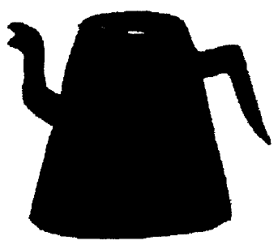

A
Abram Paşa, Pargalı: Dönme paşalardan
Abuzer Efendi: Diğerleri gibi, müstahdem
Abuzeyd Tarabin: Mekke şerifi, potansiyel hain
Ahmed Hâlât Bey: İftirakçı şef
Ahmed Tevfik Paşa: Bir Osmanlı müellifi
Altinof, Petro: Türk asıllı bir Rus sanatçı
Anastas, Barba: Akıllı bir Rum
Anette: Belçikalı bir kız
Arap Kadri: Tarihi bir karakter
Arif Sait Paşa: Mısırlı bir bibliyofil
Arif Hikmet: Kadrolu gerici, bkz. Aymaz Cehalet
Aşıkağazade: Bir Osmanlı müellifi
Aşur Paşa, Konyalı: Bir denizci
Atik Peymani: Ozan
Atlı Han: Kun hanı
Aymaz Cehalet: Bir eğitimci
Ayşebula: Muhayyel bir fındıkçı
Awrangzib Paşa: Bais-i hayatımız, Paşa
Azrail: Canalıcı melek
B
Baal: Yanlış anlaşılmış bir Fenike tanrısı
Babette: Bir başka Frenk kızı
Bali: Paşa, İnşaat kalfası
Basri: Uşak
Bekri Aga, Çomar Kolbaşı: Seksoncubaşı
Bekri Mustafa: Nüktedan içkici
Bereket II: Gerçek Osmanlı sultanı, Berke’nin prototipi
Beril: Biyoloji hocası, çağdaş bir kadın
Berke II: III. Burak'ın oğlu, Osmanlı sultanı
Biçare Efendi: Osmanlı müverrihi, feraset abidesi
Bilal Ağa, Hafız: Kızlarağası
Bozkonak, Yusuf Sadık: Dilci yazar
Bogaturovsky, Fyodor: Türk asıllı Rus kontu
Burak II: Osmanlı sultanı
Burak III: II. Berke’nin babası, Osmanlı sultanı
C-Ç
Cabbar: Mülazim
Camia, Piraye: Sosyolog-detektif
Cebenoyan, Hıfzı Kâmil: Edebiyat ordinaryüsü
Cehud Bilal Ağa: Osman Hulûsi’nin saklı müridlerinden
Cemil: İftirâkçıların Susurluk kaymakamı
Cemil Sultan: Gravürcülere modellik eden bir sultan
Ceyhan (Lütfı): 66 ihtilalcilerinden
Ceylani, Utku Suat Ferid: Uydurukçu
Cousseau (Captaine, Jacques): Frenk aydınlatma uzmanı, kandilci
Crow, Hertford: Kadrolu tarihçi
Çalı, Yorgo V.: Reis-i Kâinat, maalesef
Çaydanlık, Vuslat: Muhayyel bir yazar
Çeşmibülbül, Harun: Erkek türkücü
Çözenel, Hicri: Edebiyat detektifi, daire başkanı
D
Densiz Han: Moğol hanı
Debemuş: Uykucu bir Rum genci
Diken, Çağrı: İyimser gazeteci
Dimne: Bir çakal
Domaniç, Haşmet: Devlet adamı
Dunes, Montana: Sinema karakteri
Dursun: Bir savaş figüranı
E
Emir Demir Keser Han: Osmanlı’nın Avrupa’ya girişini geciktiren Asyalı bir Han
Enbiya Çelebi: Evliya Çelebi’nin abisi
Ercümend Paşa: Sadrazam, daha sonra Sultan
Erdoğmuş, Muhlis: Oyun yazan
Ertur: Kral, Cemel-ot kralı
Erü: Dişi robot
Esfelüddin: Faik Ladin’in takma adı
Evcimen, Olcay: Başbakan, bkz. Ercümend Paşa
F
Fahir (Torbeş): İnternet canavarı
Faik Ladin Bey: Velut bir müellif
Fargo(t): Ana kraliçe, espiyonaj uzmanı
Tombak-Ferguson, Melissa: Hemşire, daha sonra okyanus
Faysal Harrani: Evliyaullahtan
Ferguson, George: Amatör ressam
Feridun III: Osmanlı sultanı
Ferihan: Faik Bey’in, sonra da Hoca Esadullah’ın karısı
Felemenk Osman Ağa, Peynircizade: Ateist
Fiderot, Antoine: Kandilci
Florinalı Mehmed Rûşdi: Osmanlı müellifi
G
Georgette: Bir başka Frenk kızı
Gordion (Isaac): İngiliz müellif
Göbelek, İhsan: Masadaş
Gördüm, Osman Hulûsi: Bir müellif
Guizot, Monsieur (Alain): Ûbenadan
Gûlbeden: Bir öneri
Günet: Kapıcı Yaşar’ın kızı, Anette olması muhtemel
H
Habibay (Habip T.): 66 ihtilalcisi
Halat: Bkz. Ahmet Halat Bey
Halim I: Osmanlı Sultanı
Hamdi Dücan: Osmanlı müellifi
Hamdawi, Mohammed: Mahabatlı Kürt tarihçi
Hamdi Efendi: Kahveci, amatör kösçü
Hamedani: lranlı müellif
Hameseddin-i Habeşi: Ercûmend’in kulu, sonra hain
Hamdun Nöker Paşa: Nökeroviç diye maruf paşa
Hami: Bir marangoz, sonra musahip
Hamilton, Paul: Zavallı bir müsteşrik
Hamuda II: Osmanlı sultanı, ocağa incir diken
Hasan Çavuş başı: Kılıç hocası ve sonra Çavuşbaşı
Hayati Kâmil: Şair
Hemando (Herr Nando): Bir kral
Hetmanoff (Oleg Treblin): Doğu pazarı için sahte resim yapan bir Rus ressam
Hilal Bey: Meclis reisi
Hisarcıklı Kör Hafız: Kör bir hafız, Hisarcıklı
Hişam Kâmil: Başka bir Osman Hulûsi müridi
Hoca Esadullah Merkezi Efendi: lftirâk’ın, daha sonra Mukasemecilerin hocası
Hoxa, Niyazi: Trablus cumhurbaşkanı
Hüsrev Bey: Sarı Abdullah Paşazade, kılıç artığı bir ayrılmış
Hüsrev I: Osmanlı sultanı
Hüsrev III: Osmanlı sultanı, uyduruk
Hüzün Abla: “Agony Aunt”ın Türkçesi
I
lorganus (Johann): Bir müsteşrik
Ivy: Erkek robot
İ
lbni Muhanna: Sözlük yazan
İhsan Kırımçak: Efem... naçizane...
İkbal: Yaşlıca bir kadın
İkmal, İhya: Şair
İlhami İhap Bey: Kötü niyetli bir Jön Türk
İltutmuş, Ekber Recil: Müstakbel mazide başbakan
İnce Mustafa: Bir ayrılmış
İncili Çavuş: Bir çavuş
Inebolevi Bali Efendi: Muhteris müellif
İpek, İlhan: Bir yazar, bkz. E. Jüt.
İsen Taycı: Kalmuk elçisi
İshak Paşa: Budin valisi
İskender-i Zülkâmeyn: İhanete uğramış bir Makedon kralı
İskender, Yahya Paşazade: Kılıç artığı başka bir ayrılmış
İt Barak Baba: Heterodoks bir baba
İvaz Paşa: Osman Hulûsi’nin babası, yumurta müstahsili
J
Jüt, Erhan: İlhan lpek’in müstear adı
K
Kabirci, Hüseyin: Amatör mesih
Kafdağlı, Ferhat: Yazar
Kâinat Bey: Ressam
Kalmuk Elçisi: Bir at
Kara Molla Vâsıf: Hwace’nin yaratıklarından
Kara Osmancık Han (Ertokuş): Osmanlı devletinin banisi
Karaca Dede: Ozan
Kaska, Frederick: Bir yazar
Kelile: Başka bir çakal
Kerteriz, Murat: Zihniyet tarihçisi
Kırımçak, İhsan: Gene bendeniz...
Koniçe, Âdem Prink: Sosyalist bir hükümet reisi
Körfem: Başka kâgıtçıların annesi
Körmurad: Bir kâğıtçı
Kuddusi: Medyum, sonra manken
Kutadgo, Cenap: Mastırlı edebiyat detektifi
Kutluboğa bin Güçlûbugra: Selçuklu şehzadesi
L
Lâlabel: Bir kız
Lâlendam: Kâğıt tasnifçisi
Lâlfem: Bir kadın
Lâlmurad: Kâğıt toplayıcısı
Lâlahmed: Lâlmehmed'in ikizi
Lâlmehmed: Lâlahmet’in ikizi
Lâlmina: Entel kâğıt toplayıcısı
Lâlmir: Salak bir köpek
Lâlsuat: Bir ihtimal
Lemmingroad, George: Amerikalı yazar
Linet: Yoğurt sürme uzmanı
M
Mahmure Hatun: Osman Hulûsi’nin fedakâr anası
Maltız, Fahrünnisa: Mimar-müteahhit
Maudlaire, Yve: İhya lkmal’in Fransız hocası, Dalak adlı eseri meşhurdur.
Mecüc: Bir karakter, Türkçesi Bücüş
Meddücezir, Şakire: Kadın yazar
Mehlika Sultan: Aslen Bizanslı bir cariye
Memduh Hurşit Paşa, Koca: Paşa, dülger
Merkit, Emir: Afacan ve aykırı bir yazar
Memuş: Uykucu bir Rum daha
Mestanzade: Şeyhülislam, Hwace’nin kuklası
Meymune (Pırlanta): Emekli General Cüneyt Sert’in müstear adı
Miras, İnci: Müzeci
Morhurşid: Alim ve mutasavvıf
Moşe Efendi: Hekim, nadir defter meraklısı
Muska, Nadir: Masadaş
Mübessel Teyze: Reklam filmi karakteri
Müntefiki, Tunç, Dr.: Alamet-i Sabah’ın doktoru
Mürdüm, Osman Ferdi: Osman Hulûsi Gördûm’ün müstear adı
Müstakim Bey: Tarikatçı edebiyat detektifi
N
Nasıreddin Kümbet: O garip türbeleri yaptıran Selçuklu sultanı
Nasrettin Hoca: Rahmet istedi herhalde!
Nedim Bey: Siyavuş Paşazade, bir kılıç artığı daha
Nehruz Ağa: Kızlar ağası
Numan Çelebi: Hekim. Ulemanın pozitivist kanadından
O
Obruk, Şevki: Ressam
Okeanos: Yunanistanlı bir ön-Tanrı
Okşan: Gizli polis
Orman, Hidayet: Asri köşe yazan
Osman Hulûsi Beyefendi Ağa: Meşayıhten
Ö
Ökkeş: Sivil polis, bkz. Okşan Hanım
Ökkeşoğlu, Nizameddin: İhtilal kurbanı doçent
P
Parkinson, Hasip: Paşa, Iskoç asıllı Osmanlı defterdar
Parşömen, İbrail Haluk: Duvduvani yorumcusu, Belediye’de kadrolu tarihçi
Perkins, Jessy: Artiz
Piyazi: Iftirâkçı
Pupa, Naci: Yazar
R
Razi Tenviri Bey: Morfin müptelası bir doktor
Refahüddin Efendi, Hwace Câmi’-üs Siyaseteyn: Anayasa hukukçusu
Rudolfo (Rudolph xxix): Kutsal Roma-Cermen imparatoru
S
Sab: Kararsız robot
Sabahat: Yaşlıca bir kadın daha
Sabit Niyazi Paşa: Boşu boşuna Niyazi olan bir paşa
Sadık Abid Efendi, Peynircizade: Ateist bir müftü
Salamander: Çoban, sonra bilge
Saman, Hasmim: Entelektüel işadamı
Sarı Hamza: Gerçek bir müfsit
Satılmış: Bir savaş figüranı
Satılmış: Yaşar’ın kocası, kapıcı
Satılmış: Amiral rütbeli kapıcı
Sazan Abdal: Ozan
Selami: Bir sahaf
Selim Bey Vlora: Arnavut hanedanından
Serkanlı, Kâzım: 66 ihtilalcisi
Server: İftirâkçı
Sıraceddin Bey: Din hocası
Siyavuş bin İskender: Cahil kâtiplerden
Suad Paşa: İnşaatçı bir paşa
Sûmbülten: Bir öneri daha
Ş
Şahap Çelebi: Ozan
Şakir: Sahaf, biraz pahalıcıdır
Şeker Hami: Bkz. Hami
Şemsi Bereket: Huysuz kütüphaneci
Şeyhi: Az bilinen bir Osmanlı müellifi
Şihabeddin, Sürahi: Arap sufi
Şimşekbay İzzet: Coşkun bir Osmanlı sultanı
T
Tahassür, Hamud: Kadın ruhiyatçısı
Tanju: Hain
Tanrıkulu, Emrullah Namık: Yazar
Tasviri Kubad Duvduvani Efendi: Bir müellif
Telli Haseki: Yok yere giden bir haseki. Bogaz’da türbesi vardır.
Terrida, Alex: Fransız şair
Tombak, Şehriyar: İranlı bir tacir (yani doğrusu)
Tomurcuk, Filiz: Feraset uzmanı
Tosun Paşa: Basralı. Osmanlı müellifi
Turnalı, Cemal: Ölümsüz bir sanatçı
U
Ulrih (Ulrich): Kont. Alaman Niyazi
Utarid Zülfü Paşa, Tırnakçı: Bir sanatkâr
Û
Ürküt Ata: Eski bir ozan, bence Dede İrkilt
V
Vamık Cemal: Memleket şairi,
Vehbi: Kerrake sahibi, deyimlerde oynar bir figüran
Vitrioli, Z: Film yönetmeni
Vuslat Çaydanlık: Demsiz bir yazar
Y
Yaşar Hanım: Kapıcı
Yavuz, İrkilt: Polis albayı
Yecüc: Bir karakter. Türkçesi Eciş
Yemliha: Uykucu başka bir Rum
Yesu Bar Nagara: Bir marangoz
Yeter Hanım: Bevvabinden
Yohan (Johann) Zudrig Mars: General, emekli Yunan Tanrısı
Yumuşakkök, Zeynel: Edebiyat tarihçisi
Yusuf Ziya Paşa: Coğrafya dâhisi, paşa
Z
Zaloglu Rüstem: Tarihi bir kahraman
Zebercet, Tektaş: Mimar- müteahhit
Zemberek: Sultan, Osmanlı sultanı Halim’in lakabı
Zimmer (Ludvig, Hermann): Bir müsteşrik daha
Zoltaire, Marcus: Fransız düşünür, kandilcilerden
Zrinyi tmre: Hilekâr Macar soylusu
Zûhtû Aga, Şaşı: Gösteri zayiatı, muhayyel bir dede